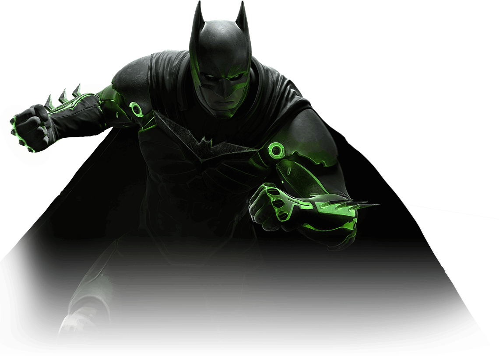
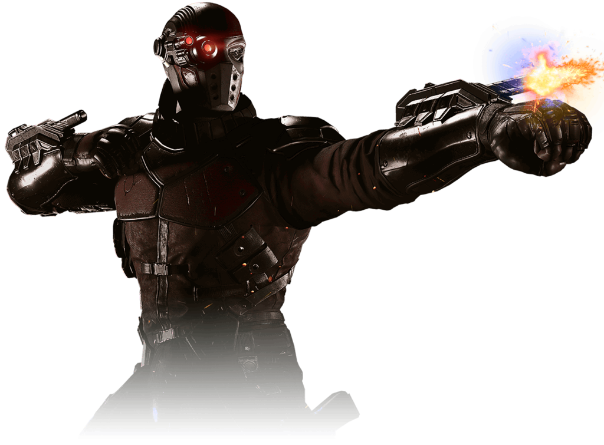
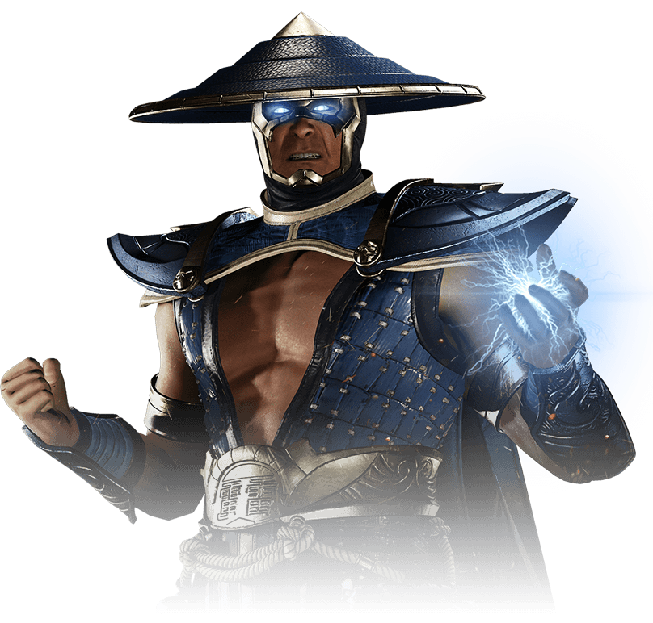
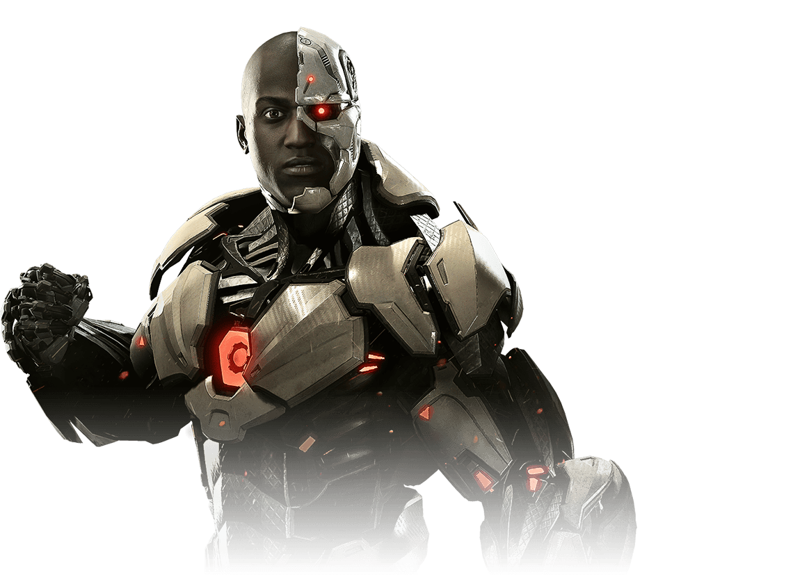
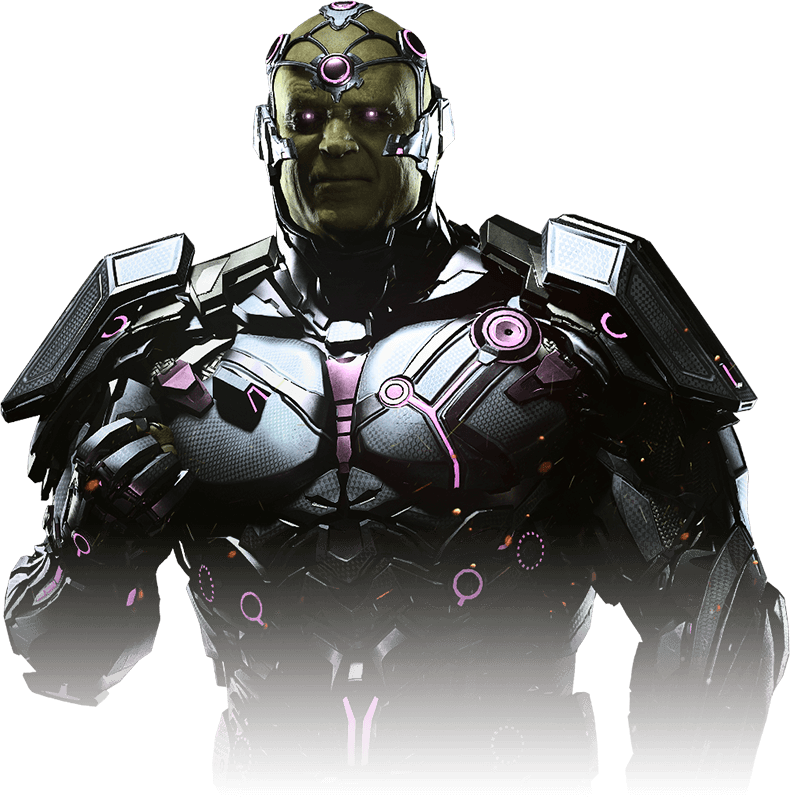
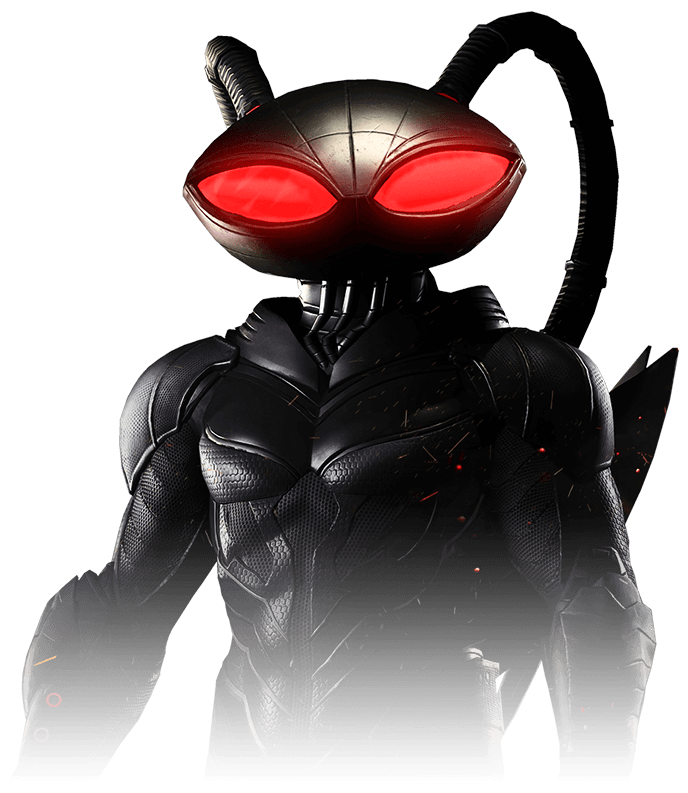
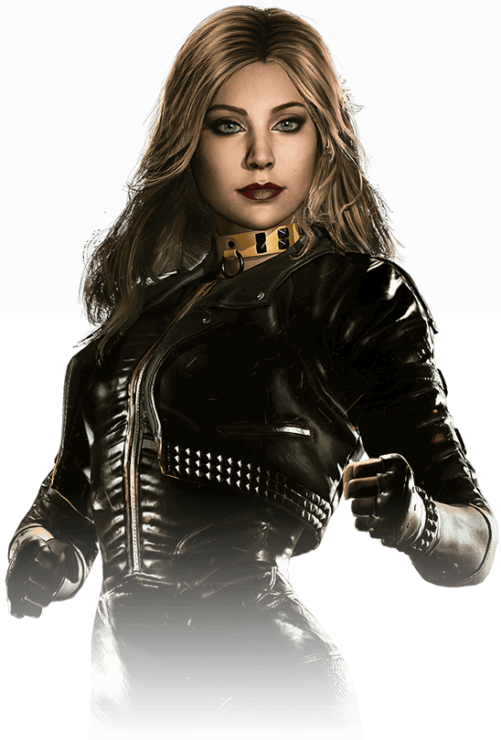
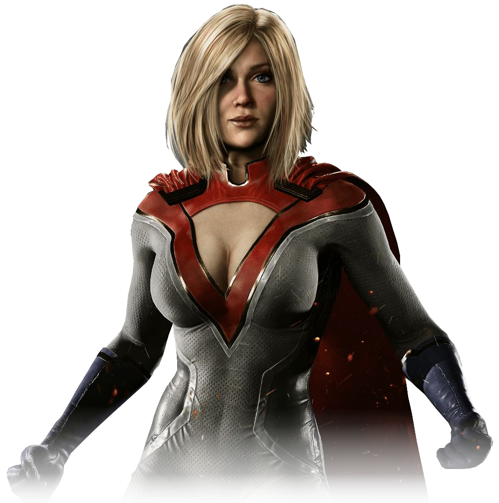

-
Batman
HP 800
Descrição
A identidade secreta do Batman é Bruce Wayne, um bilionário americano, playboy, magnata de negócios, filantropo e dono da corporação Wayne Enterprises.
-
Pistoleiro
HP 550
Descrição
Floyd Lawton, um criminoso do Universo DC e inimigo do Batman e da Liga da Justiça.
-
Raiden
HP 1000
Descrição
Raiden é o Deus do Trovão e protetor do reino da Terra, com frequência liderando as forças do bem contra o mal e servindo de mentor para os personagens terráqueos.
-
Cyborg
HP 1200
Descrição
Victor era um atleta, que num acidente perdeu grande parte de seu corpo, e graças ao seu pai cientista, conseguiu substituir a massa perdida por componentes robóticos, e com isso acabou virando um ciborgue.
-
Brainiac
HP 3000
Descrição
Brainiac é tipicamente descrito como um ciborgue ou androide extraterrestre. Ele é um dos principais inimigos do Superman, e é responsável por encolher e roubar a Kandor, a capital do planeta natal de Superman, Krypton.
-
Arraia Negra
HP 1100
Descrição
Arraia Negra é um dos grandes vilões do Aquaman. Seu traje letal de alta tecnologia permite que ele sobreviva embaixo d'água e se adapte a qualquer número de situações com um arsenal de armas destrutivas.
-
Canário Negro
HP 600
Descrição
Canário Negro é uma vigilante super-heroína que luta contra o crime usando artes marciais e um ataque de gritos sônicos.
-
Poderosa
HP 2500
Descrição
A Poderosa é o equivalente da Terra-Dois à Supergirl, a Kryptoniana nativa e prima do Superman.